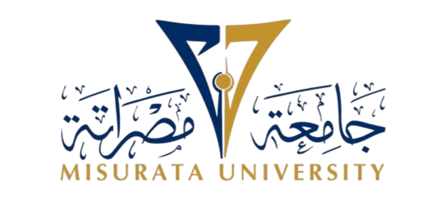

|  | ||||
جامعة مصراتة |
||||
حول الجامعة |
المشاركات |
الكليات |
||
حول الجامعة
بدأت جامعة مصراتة في سنة 1984 و تأسست رسميًا في عام 2010،
ظهرت نتيجة لدمج جامعة السابع من أكتوبر وجامعة المرقب وفقًا لقرار اللجنة الشعبية العامة الليبية. يقع مقرها الرئيسي في مدينة مصراتة
حصلت الجامعة على المرتبة الأولى محليًا في جودة التعليم والبحث العلمي، وذلك حسب تصنيف "UNIRANKS" العالمي الذي يعتمد على عدة معايير،
تشمل الخدمات الطلابية، وتنوع البرامج التعليمية، والبحث العلمي. تأتي جامعة مصراتة كواحدة من أفضل الجامعات في ليبيا،
وتدعمها اتفاقيات تعاون وتوأمة مع جامعات أخرى على المستويين المحلي والدولي لتعزيز مكانتها العلمية والبحثية
المشاركات
:تشارك جامعة مصراتة في العديد من الأنشطة و المسابقات على الصعيد المحلي و الدولي أبرزها
- تتويج فريق جامعة مصراتة بلقب بطولة IUFC 2024 العالمية لكرة القدم الخماسية
تعرف على المزيد- فريق جامعة مصراتة للبرمجة يحقق المركز الثالث ويتأهل للمسابقة البرمجية العربية والإفريقية
تعرف على المزيد- جامعة مصراتة تتصدر دوليًا في مسابقة كأس رواد الأعمال بمشروع 'صنعة'
تعرف على المزيد- جامعة مصراتة تشارك في معرض النيابة العامة الدولي الأول للكتاب بطرابلس
تعرف على المزيد
 مركز التوثيق و المعلومات 2024 University of Misurata ©
تواصلوا معانا +218-515231323
info@misuratau.edu.ly